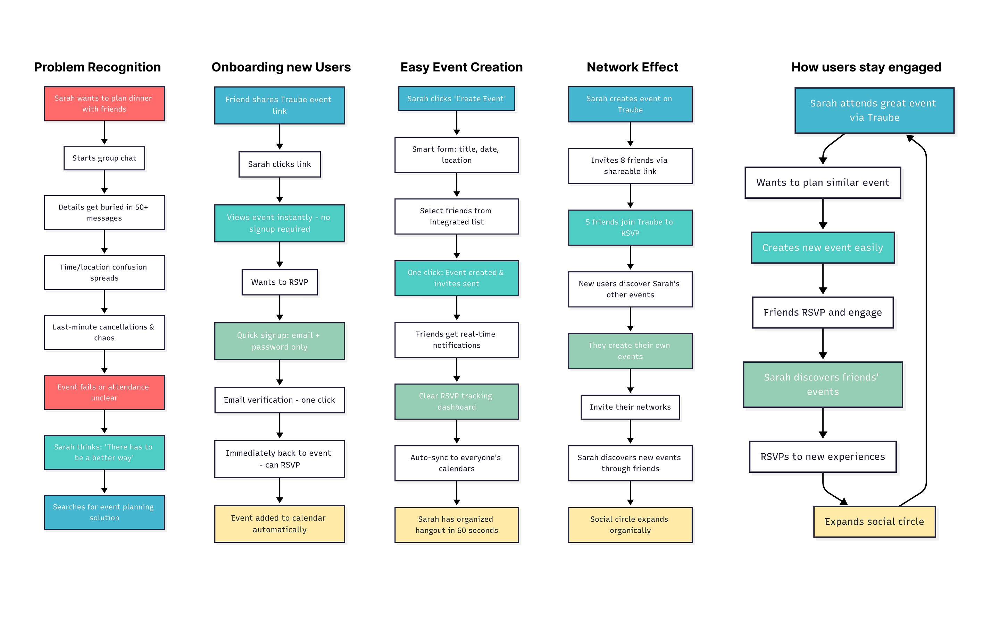
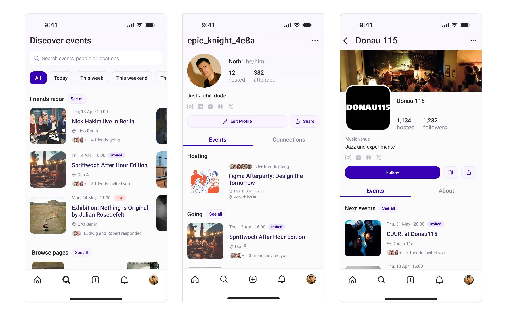

Building a Privacy-First Social Event Platform
Transforming how people discover and organize meaningful social connections
My Role & Responsibilities
- Me (Wolfgang) Lead UX Designer & Front-End QA
- Collaborated with Co-founder & Full-Stack Developer
- Leveraged AI development tools for rapid prototyping
Project Timeline
- Q1 2025 - Present
- 0 to MVP in 6 months
- Continuous user validation and iteration
The Problems We Experienced
- Fragmented coordination: Users juggle 3+ platforms to organize simple events, leading to poor attendance and planning friction
- Privacy concerns: 53% of young adults want tools that respect their attention and data, but current platforms prioritize engagement over user control
- Organizational burden: 73% want to attend events, but few organize them due to complexity and time investment
- Limited discoverability: Existing platforms aren't optimized for small, private group coordination within social networks
- Communication overflow: Critical event information gets lost in group chats with 50+ messages
What I actually did
User Research & Strategy
Conducted lean user research with 15+ potential users to validate core assumptions and define target personas, informing product-market fit decisions.
Mobile-First Design System
Developed comprehensive design system with touch-friendly interactions, slide-in dialogs (drawer), and keyboard detection for seamless mobile experience.
AI-Assisted Development
Leveraged AI coding tools to rapidly prototype and iterate on features while maintaining code quality and implementing complex user flows.
User Flow Design
Created core user journeys. Designed detailed operational flowcharts and mobile-first navigation architecture.
Rapid Prototyping & Testing
Built working prototypes quickly, conducted informal user testing with 10-15 people, and iterated based on immediate feedback within days.
Front-End QA & Deployment
Handled front-end quality assurance, implemented changes directly in code, and managed deployment through Vercel with continuous integration.
Ideas and Screens
Discovering the Problem Behind Traube
Mapping the user journey that led to the idea for a better way to plan social events
User Journeys
From planning to participation. A look at the user journeys
Event Creation
Event Participation
RSVP
User Personas
Created proto personas based on users we talked to and where part of our target group.

First wireframes
Created first wireframes to follow up on the idea and bringing it into reality.
Create Event Screen
Event creation needed to be intuitive and fast. We designed a streamlined multi-step process with smart defaults and AI-assisted image generation.
Discovering Events
Users needed to discover events through their social network.
Event Pages
Complex event details needed to be digestible on mobile. We designed progressive disclosure with clear event information hierarchy and one-tap RSVP actions.
Notifications
We created intelligent notification systems that inform without noise.
Manage Events
Traditional platforms make guest management complex and privacy-unfriendly. We designed granular RSVP controls with batch operations and privacy-first invite systems.
The Process
Problem Recognition & Research
Identified event coordination problems through personal experience. Created proto-personas and validated assumptions through informal user conversations.
Experience Design & Information Architecture
Created user journey maps and wireframes that prioritized core user needs. Designed mobile-first architecture that scales across devices and use cases.
Technical Setup & Development
Set up NextJS project with Shadcn/UI components and Supabase backend. Implemented responsive design system and PWA features using modern web technologies.
Rapid Prototyping & Testing
Built working prototypes quickly using AI-assisted coding. Conducted informal user testing sessions with 10-15 people and iterated based on immediate feedback.
Privacy Framework Implementation
Developed granular privacy controls and approval workflows. Implemented friend network integration that respects user boundaries while enabling organic growth.
Launch & Continuous Iteration
Deployed through Vercel with continuous integration. Gathering user feedback and implementing changes directly in code while maintaining design quality.
Current Progress:
MVP Development
Core features built and tested internally
User Feedback
Users tested and provided feedback on flows
Key Takeaways
- Technical UX skills are powerful: Being able to implement designs directly in code allowed for rapid iteration and better communication with developers.
- AI-assisted development accelerates UX: Using modern AI tools allowed us to prototype and test ideas quickly while maintaining high code quality.
- Privacy-first isn't just compliance: Designing with privacy as a core feature creates better user experiences and builds trust.
- Mobile-first is essential: Event coordination happens on mobile, so designing for mobile first led to better overall user experience.
- Lean UX is great: Rapid validation through working prototypes and informal testing was more valuable than extensive research.
- Cross-functional collaboration matters: Speaking "dev language" and understanding technical constraints led to better design decisions.
- User feedback drives iteration: Having direct user access and ability to implement changes quickly created a strong feedback loop.
- Modern web technologies enable rapid development: NextJS, Shadcn/UI, and Supabase allowed us to build a full-featured platform quickly.